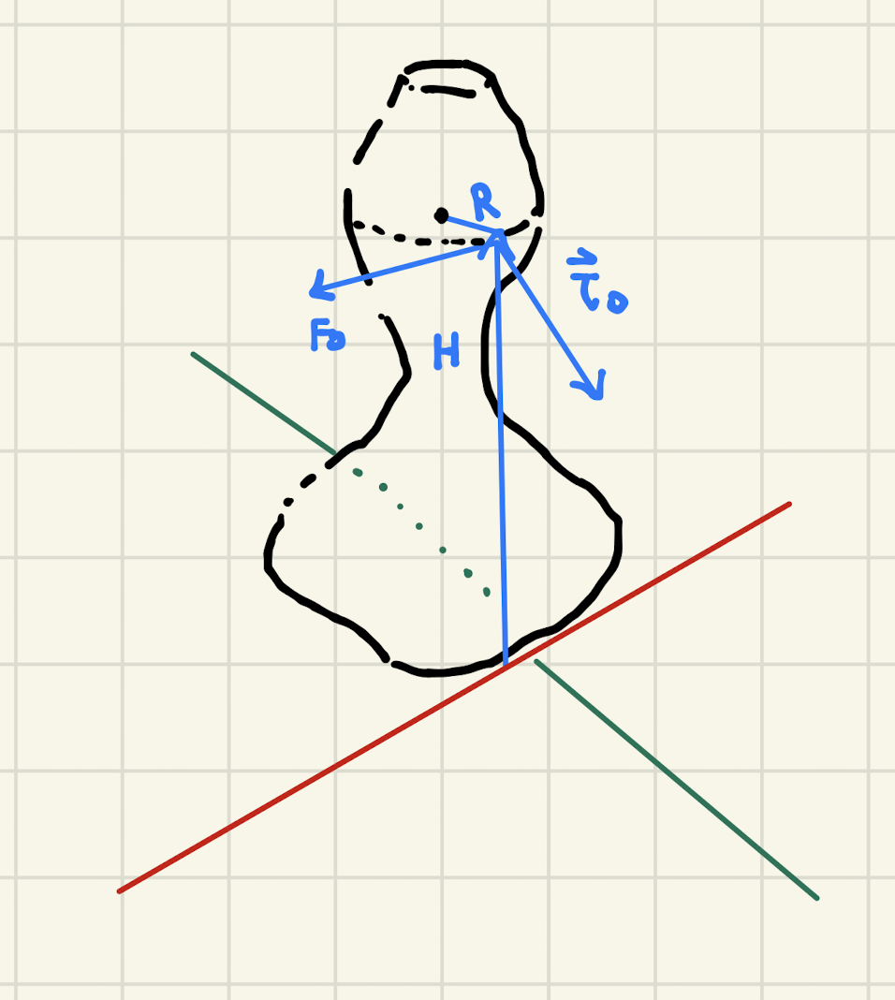

Backlinks
1 Proving the Parallel Axis Theorem
We will begin with the definition of rotational inertia about an origin:
\begin{equation} I = \sum_i m_i {l_i}^2 \end{equation}As per defined by the problem \(l_i' = x_i' \hat{i} + y_i' \hat{j}\), the displacement vector from \(l_i\) to the \(CM\).
We also understand that \(\vec{R}_{CM} = X_{CM} \hat{i} + Y_{CM} \hat{j}\), the components to the location of the center of mass.
Therefore, the actual position \(\vec{l}_i\) of the axis of rotation can be expressed as:
\begin{align} l_i &= \vec{R}_{CM} + \vec{l}_i' \end{align}Substituting this expression into that for \(I\):
\begin{align} I &= \sum_i m_i{l_i}^2 \\ &= \sum_i m_i( \vec{R}_{CM} + \vec{l}_i')^2 \\ &= \sum_i m_i( (\vec{R}_{CM})^2 + 2(\vec{R}_{CM})(\vec{l}_i') + (\vec{l}_i')^2) \end{align}We can see that the first and last terms will result in the expression we need, and therefore we are bound to figure why the following expression would result in \(0\):
\begin{align} &\sum_i 2(\vec{R}_{CM})m_i\vec{l'}_i\\ \Rightarrow\ &2(\vec{R}_{CM}) \sum_i m_i\vec{l'}_i \end{align}Recall that \(\vec{l'}_i\) is the location of the distance from a given point mass in the body to the center of mass. Of course, this makes \(\sum_i m_i\vec{l'}_i\) the expression for the center of mass in the center of mass reference frame.
We know that the coordinate of the center of mass in the center of mass reference frame is \(0\), making this whole expression \(0\).
Therefore:
\begin{align} I &= \sum_i m_i{l_i}^2 \\ &= \sum_i m_i( (\vec{R}_{CM})^2 + 2(\vec{R}_{CM})(\vec{l}_i') + (\vec{l}_i')^2) \\ &= (\vec{R}_{CM})^2 \sum_i m_i + \sum_i m_i (\vec{l}_i')^2 \\ &= (\vec{R}_{CM})^2 M + \sum_i m_i (\vec{l}_i')^2 \\ &= D^2 M + I_{CM} \ \blacksquare \end{align}2 5-Ring Object
We will leverage the parallel axis theorem to figure the inertia at the center point.
We can see the distance from the center of mass of each side-sphere to the axis of rotation is \(2R\). Furthermore, we can see the mass of the ring is \(\frac{1}{5}M\).
As been demonstrated before, the rotational inertia of a ring is:
\begin{equation} I = MR^2 \end{equation}For the ring with \(\frac{1}{5}\) mass then:
\begin{equation} I_{CM} = \frac{1}{5}MR^2 \end{equation}Applying the parallel axis theorem, then, to each of the four side-objects:
\begin{align} I &= I_{CM} + \frac{1}{5} MD^2 \\ &= \frac{1}{5}MR^2 + \frac{4}{5}MR^2 \\ &= MR^2 \end{align}We repeat this procedure four times, to result in the outer rings' rotational inertia of:
\begin{equation} 4MR^2 \end{equation}The last ("middle") ring has simply the rotational inertia about its center of origin:
\begin{equation} \frac{1}{5}MR^2 \end{equation}And therefore, the total rotational inertia is:
\begin{equation} I = \frac{21}{5}MR^2 \end{equation}3 Spinning Top
3.1 Torque
We are asked to find the magnitude and direction of torque \(\vec{\tau}_0\) applied by the string. This is easily achieved with the expression for torque \(\vec{r} \times \vec{F_0}\).
We will do this in components. Observing the point at which the string is attached, we noticed that it has two components: one towards the positive \(y\) direction, and one towards the positive \(z\) direction. That:
\begin{equation} \vec{r} = R\hat{j} + H\hat{k} \end{equation}Furthermore, we can see from the graph that \(\vec{F_0} = F_0 \hat{i}\). Their dot products, therefore, are:
\begin{align} \vec{\tau}_0 &= (R\hat{j} + H\hat{k})\times (F_0 \hat{i})\\ &= RF_0 (\hat{j} \times \hat{i}) + HF_0 (\hat{k}\times \hat{i})\\ &= -RF_0 \hat{k} + HF_0 \hat{j}\\ &= HF_0 \hat{j}-RF_0 \hat{k} \end{align}And therefore:
\begin{equation} \begin{cases} \tau_0_x = 0\\ \tau_0_y = HF_0\\ \tau_0_z = -RF_0\\ \end{cases} \end{equation}3.2 Diagram of \(\vec{\tau}_0\)

3.3 Balancing Forces
To figure the net torque on the system, we will need to add the torques contributing to the net torque in the system.
We have already deducted above \(\vec{\tau}_0 = HF_0 \hat{j}-RF_0 \hat{k}\). Given \(\vec{F}_1\) is attached to the origin of the system, it contributes no torque. Therefore, to figure out the net torque we only need to deduct that for \(\vec{F_2}\).
\begin{align} \vec{\tau}_2 &= \vec{r_2} \times \vec{F_2}\\ &= -\frac{H}{2} \hat{k} \times F_2 \hat{i}\\ &= -\frac{HF_2}{2} \hat{j} \end{align}As we know, the object simply rotates about the \(\hat{k}\) axis. Therefore, the net torque along \(\hat{j}\) would have to be zero.
Therefore:
\begin{equation} -\frac{HF_2}{2} +HF_0 = 0 \end{equation}We further understand that the object does not move. This means that it has a net force of \(0\) as well. That is:
\begin{equation} F_0 + F_2 - F_1 = 0 \end{equation}We are given \(F_0\). We therefore have two equations for two variables, rendering it suitable for solving.
\begin{align} &-\frac{HF_2}{2} +HF_0 = 0\\ \Rightarrow\ & 2HF_0-HF_2 = 0\\ \Rightarrow\ & 2F_0-F_2 = 0\\ \Rightarrow\ & F_2 = 2F_0\\ &F_0+F_2-F_1 = 0\\ \Rightarrow\ & F_0+2F_0 - F_1 = 0\\ \Rightarrow\ & F_1 = 3F_0 \end{align}Per the setup of the problem, \(\vec{F_1}\) is in the \(-\hat{i}\) direction, and \(\vec{F}_2\) in the \(\hat{i}\) direction. Hence:
\begin{equation} \begin{cases} \vec{F_1} = -3F_0 \hat{i} \\ \vec{F_2} = 2F_0 \hat{i} \end{cases} \end{equation}3.4 Rotational Inertia
We have already determined the net torque of the system.
\begin{align} \vec{\tau}_2 &= -\frac{HF_2}{2} \hat{j}\\ \vec{\tau}_0 &= HF_0 \hat{j}-RF_0 \hat{k}\\ \vec{\tau}_{net} &= (HF_0 - \frac{HF_2}{2})\hat{j} -RF_0 \hat{k} \end{align}We also know from the setup of the problem that the left term works out such that, given the values of \(F_0\) and \(F_2\), it is zero in this scenario. Hence:
\begin{equation} \vec{\tau}_{net} = -RF_0 \hat{k} \end{equation}Based on Newton's Second Law, we understand that:
\begin{equation} \vec{\tau}_{net} = I \vec{\alpha} \end{equation}If the top has rotational inertia \(I_0\), therefore:
\begin{align} &I_0 \vec{\alpha_0} = -RF_0 \vec{k}\\ \Rightarrow\ &\vec{\alpha_0} = \frac{-RF_0}{I_0}\vec{k} \end{align}3.5 Kinematics Equations
Our system is angularity accelerating at an constant angular acceleration of \(\vec{\alpha_0}\). As such, we integrate twice to figure the kinematics equations.
First, as derived above:
\begin{equation} \vec{\alpha}(t) = \frac{-RF_0}{I_0}\vec{k} \end{equation}Taking the first integral of this expression, we get that:
\begin{equation} \vec{\omega}(t) = \int \vec{\alpha}(t) dt = \frac{-RF_0}{I_0}t\vec{k} + C \end{equation}where, as \(\omega=0\) at \(t=0\):
\begin{equation} \vec{\omega}(t) = \frac{-RF_0}{I_0}t\vec{k} \end{equation}Performing the integral yet again, we have that:
\begin{equation} \vec{\theta}(t) = \int \vec{\omega}(t) dt = \frac{-RF_0}{2I_0}t^2\vec{k}+C \end{equation}where again, as \(\theta=0\) at \(t=0\):
\begin{equation} \vec{\theta}(t) = \frac{-RF_0}{2I_0}t^2\vec{k} \end{equation}4 Rectangular Rod
To find the rotational inertia of a rectangular rod, we need to perform three integrations: building up strips, slices, and finally the inertia of the actual rod.
4.1 Strip
We begin by recalling that the expression for rotational inertia is:
\begin{equation} I = \sum_i m_i {l_i}^2 \end{equation}Furthermore, we understand the mass of our entire volume is \(M\). Therefore, the mass density along the object would be \(\frac{M}{HWL}\).
To figure the inertia of an infinitesimal strip of point masses, we perform a simple integration along the \(w\) axis:
\begin{align} I_{strip} &= \int_{-W/2}^{W/2} {l}^2 dm\\ &= \int_{-W/2}^{W/2} {l}^2 \frac{dm}{dl} dl\\ &= \int_{-W/2}^{W/2} {l}^2 \frac{M}{HWL} dl\\ &= \frac{M}{HWL}\left(\frac{(W/2)^3}{3}-\frac{(-W/2)^3}{3}\right)\\ &= \frac{M}{HWL}\left(\frac{W^3}{24}-\frac{-W^3}{24}\right)\\ &= \frac{M}{HWL}\left(\frac{W^3}{12}\right)\\ &= \frac{M}{HL}\left(\frac{W^2}{12}\right) \end{align}4.2 Slice
We will now find the inertia of a slice. The procedure is essentially the same, but that there is no longer any non-constant components. Therefore, the inertias, as we are rotating about the same axis of a rigid body together, simply stack ("add"). That is: the rotational inertia of a slice is simply \(H\) times that of a strip.
\begin{align} I_{slice} &= H\ I_{strip}\\ &= H\ \frac{M}{HL}\left(\frac{W^2}{12}\right)\\ &= \frac{M}{L}\left(\frac{W^2}{12}\right) \end{align}4.3 Final Rotational Inertia
Finally, we will leverage the parallel axis theorem to deduct rotational inertia of the entire rod.
At every plate \(i\), we note that it will be \(l_i\) away from the axis of rotation \(\hat{k}\). By the parallel axis theorem:
\begin{equation} I = I_{cm} + mD^2 \end{equation}where, \(l_i = D\) and $m=\frac{M}{L}$—the mass of each slice.
That is, then:
\begin{equation} I_{slice\ about\ \hat{k}} = \frac{M}{L}\left(\frac{W^2}{12}\right) + m_i (l_i)^2 \end{equation}We aim to find the sum of all such rotational inertia slices about \(\vec{k}\) along \(L\), meaning we will figure:
\begin{equation} I= \sum_L\left( \frac{M}{L}\left(\frac{W^2}{12}\right) + m_i (l_i)^2\right) \end{equation}Splitting this summation into two parts:
\begin{equation} I = \sum_L \frac{M}{L}\left(\frac{W^2}{12}\right) + \sum_L m_i (l_i)^2 \end{equation}We can see that, because the lack of differentials on the left side, the left expression can simply be simplified to route multiplication:
\begin{align} I &= \sum_L \frac{M}{L}\left(\frac{W^2}{12}\right) + \sum_L m_i (l_i)^2\\ &= M\left(\frac{W^2}{12}\right) + \sum_L m_i (l_i)^2 \end{align}The right side, however, requires integration. The actual integral is, fortunately, almost the same procedure as before—summing up differential \(l_i\) along \(L\) via differential masses \(m_i\). We will leverage the mass density of a slice again: \(\frac{M}{L}\) ("total mass divided by all slices").
\begin{align} \sum_L m_i (l_i)^2 &= \int_{-L/2}^{L/2} l^2 dm\\ &= \int_{-L/2}^{L/2} l^2 \frac{dm}{dl}{dl}\\ &= \int_{-L/2}^{L/2} l^2 \frac{M}{L}{dl}\\ &= \frac{M}{L}\int_{-L/2}^{L/2} l^2 {dl}\\ &= \frac{M}{L}\int_{-L/2}^{L/2} l^2 {dl}\\ &= \frac{M}{L} \left (\left\frac{l^3}{3}\right |_{-L/2}^{L/2} \right)\\ &= \frac{M}{L} \left(\frac{L^3}{12}\right)\\ &= M \left(\frac{L^2}{12}\right) \end{align}Substituting this back into our above expression for \(I\) again:
\begin{align} I &= M\left(\frac{W^2}{12}\right) + \sum_L m_i (l_i)^2\\ &= M\left(\frac{W^2}{12}\right) + M \left(\frac{L^2}{12}\right)\\ &= \frac{1}{12}M\left(W^2 + L^2\right)\ \blacksquare \end{align}